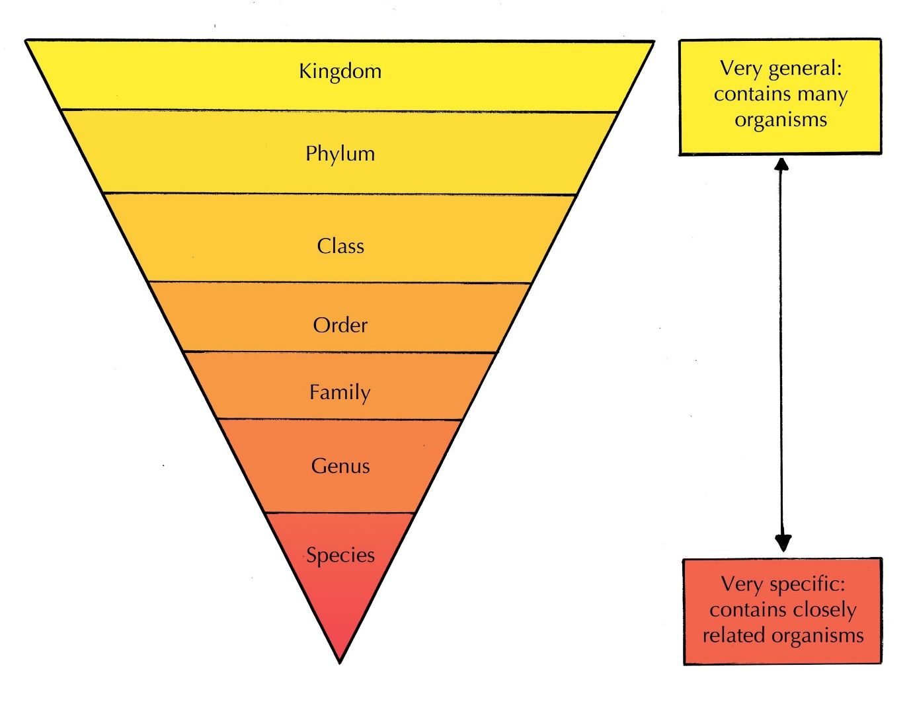

Diversity of life
Early scientists tried to understand life by categorising it based on common characteristics.
Biodiversity – Refers to the variety of living organisms on Earth including, species diversity (a number of species of herbivores), genetic diversity (differences in genes of a species Eg: dog species) and ecosystem diversity (E.g. seven diverse biomes in South Africa)
Indigenous - Species that occur naturally, not accidental or by man, e.g.: Greater flamingo is indigenous to parts of Africa, Asia and Europe
Endemic - species that only exist in one geographical region, e.g.: The King protea is endemic to South Africa.
Alien or exotic - species that aren’t indigenous to a specific area and have been naturally introduced to that area
Invasive - Alien/exotic species that inflicts harm to a new environment.
South Africa is a biodiverse hotspot meaning that it has many biodiverse species. South Africa has 10% of the world’s total known birds, fish and plant species, as well as 6% of the mammal and reptile species. Even though South Africa only covers 1% of the world it is the 3rd most biodiverse country.
Classification is grouping on similarity. The practice of grouping organisms is known as taxonomy. Classification is a hierarchical process, starting with broad differences and one step at a time introduces more detailed criteria. Artificial classification systems, such as the grouping of vehicles is based on arbitrary groupings and have hardly any meaning. Biological classification is based on research in anatomy, physics, chemistry and genetics. There is a scientific method of classification that group organisms that have common characteristics. Each organism is grouped into one of the five groups, which are divided into smaller groups and so on.
To identify organisms, we use two-part scientific names. First name represents the genus and the second one represents the species. (Genus and species names are similar to your name and surname). The Genus name must be written with a capital letter and species name is written with a lowercase letter. The scientific name must be underlined or in italics. E.g.: Panthera leo is the scientific name for a lion, so ‘Panthera’ is the genus name and ‘leo’ is the species name.

Living things are classified into five major kingdoms:
Kingdom Monera consists of prokaryotic, unicellular organisms (an organism that consists of a single cell only). Bacteria are part of the kingdom Monera, they are the most numerous organisms on earth.
Protista are eukaryotic and can be unicellular or simple multicellular. Important examples of protists are Plasmodium (causes malaria) and Amoeba.
Fungi are eukaryotic organisms which can be multicellular or unicellular. Eg: moulds and mushroom are multicellular, and yeast is unicellular. Fungi is non-motile (incapable of movement). They are heterotrophic and are important decomposers.
Kingdom plantae organisms are eukaryotic and multicellular, with a distinct cell wall made of cellulose. They are non-motile and autotrophic as they store their food as starch.
Animals are eukaryotic and multicellular. They are mostly heterotrophic and motile. Kingdom Animalia can be classified into invertebrates and vertebrates.
Vertebrates have a back-bone, e.g., fish, amphibians, reptiles, birds and mammals.
Invertebrates don’t have a back-bone and have a soft body or hard outer body e.g., worms, jellyfish, spiders and crabs.